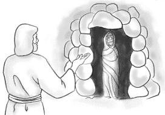

Read the lessons at the Vanderbilt Library website: http://divinity.lib.vanderbilt.edu/lectionary/BPentecost/bAllSaints.htm
Read
the lessons at the Vanderbilt Library website:
http://divinity.lib.vanderbilt.edu/lectionary/BPentecost/bAllSaints.htm
Sermon Summary
|
Listen to the lessons for the following words, and tick them off when you hear them: |
___ "Wisdom" |
|
Is today's Sermon based on one of the Lessons? |
Yes / No |
|
Circle the Lesson that the Sermon is based on. |
[Wisdom
of Solomon 3:1-9 or Isaiah
25:6-9] and Psalm
24 None of the Above |
|
What is the main point of the Sermon? |
_______________________________ |
|
Write down one Scripture reference that the preacher makes |
_______________________________ |
|
Write down one figure of speech used by the preacher (Metaphors, Similes, hyperbole) |
_______________________________ |
|
Write down five interesting words and discuss them with an adult during coffee hour |
_______________
|

Middle-School Pew-work ...Page 2
|
32 Then when Mary was
come where Jesus was, and saw him, she fell down at his feet,
saying unto him, Lord, if thou hadst been here, my brother had
not died. |
this man, which opened the eyes of the blind,
have caused that even this man should not have died? |
Jesus lifted up his eyes, and said, Father, I
thank thee that thou hast heard me. |
1. What did Jesus say was the purpose of Lazarus' illness?
___________________________________________________________________
2. Did the disciples want to go Bethany?
___________________________________________________________________
3. Who encouraged the disciples to go to Bethany?
___________________________________________________________________
4. What did Martha say to Jesus?
___________________________________________________________________
5. What did Jesus tell Martha?
___________________________________________________________________
W M G S E E N O R H T R F
|
(Revelation 21:3-4) And I heard a loud voice from the throne saying, "See, the home of God is among mortals. He will dwell with them as their God; they will be his peoples, and God himself will be with them; {4} he will wipe every tear from their eyes. Death will be no more; mourning and crying and pain will be no more, for the first things have passed away." (NRSV) |
|
Word List |